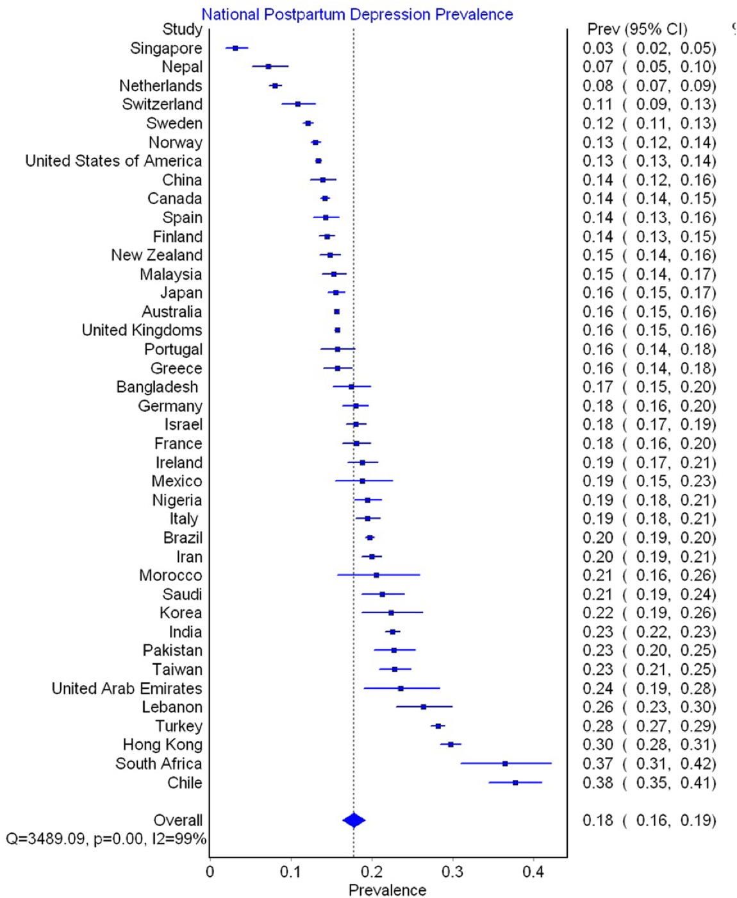

Página 12 · Eixo humor — o rastreio
A Escala de Edimburgo e a pergunta que muda tudo
A EPDS: rastreio da depressão pós-parto, avalia a última semana
A Escala de Edimburgo (Edinburgh, EPDS) é uma escala de rastreio de depressão pós-parto. Aplica-se fazendo as perguntas à paciente ou entregando o instrumento impresso, e ela marca como se sentiu na última semana (nos últimos 7 dias). São 10 perguntas, cada uma pontuada de 0 a 3. Não é para decorar a escala item a item — prestar atenção nas perguntas ajuda a fixar os próprios sintomas da depressão pós-parto, porque elas percorrem exatamente o quadro: se tem conseguido rir e achar graça das coisas, se sente prazer ao pensar nas atividades do dia a dia, se anda se sentindo culpada quando as coisas saem diferente do planejado, muito ansiosa ou preocupada sem motivo, assustada ou em pânico sem motivo, esmagada pelas tarefas, infeliz a ponto de ter o sono prejudicado, triste ou arrasada, e se tem chorado muito. A escala é, ela mesma, um retrato dos sintomas.
O corte: escore acima de 12 = rastreamento positivo
Somam-se os pontos das respostas. Um escore acima de 12 (maior que 12) caracteriza rastreamento positivo para evento depressivo. A EPDS é útil na fase aguda justamente para fazer esse rastreamento — não fecha diagnóstico, sinaliza quem precisa de avaliação aprofundada.
A pergunta-sentinela: qualquer resposta ≠ "nenhuma vez" = alerta isolado
A última pergunta é especial, diferente de todas as outras. Ela aborda a ideação de autoagressão: "a ideia de fazer mal a mim mesma já passou pela minha cabeça". Serve para identificar a paciente com maior chance de suicídio ou de algum evento autoinfligido. E tem uma regra que subverte a lógica da soma: isoladamente, qualquer resposta diferente de "nenhuma vez" já é ponto de alerta — independentemente do escore total. Ou seja, uma paciente pode ter escore baixo, "negativo" na soma, e ainda assim disparar o alerta se marcou qualquer coisa diferente de "nenhuma vez" na décima pergunta. Não se colapsa a escala num simples "soma > 12": há dois caminhos de alerta — o escore total e a sentinela. Esta é a informação mais importante da escala.
Mini-EPDS — os dois caminhos de alerta
Demonstração da lógica (enunciados parafraseados). Marque 0–3 em cada item e observe: a soma acende um caminho; a 10ª pergunta acende outro, sozinha.
- 1. Tem conseguido rir e achar graça das coisas?
- 2. Sente prazer ao pensar nas atividades do dia a dia?
- 3. Tem se culpado sem necessidade quando as coisas saem erradas?
- 4. Tem se sentido ansiosa ou preocupada sem bom motivo?
- 5. Tem se sentido assustada ou em pânico sem bom motivo?
- 6. Tem se sentido esmagada/sobrecarregada pelas tarefas?
- 7. Tem tido o sono prejudicado por se sentir infeliz?
- 8. Tem se sentido triste ou arrasada?
- 9. Tem chorado por se sentir infeliz?
- 10. A ideia de fazer mal a si mesma passou pela sua cabeça?sentinela ⚠️
Não é exclusiva do pós-parto — aplicável na gestação
Apesar do nome "depressão pós-parto", a Escala de Edimburgo não é de uso exclusivo no pós-parto — pode ser aplicada também durante a gestação. Isso já foi cobrado em prova. O nome sugere uma restrição que não existe.

A prevalência de depressão pós-parto é alta e silenciosa: estimativa global ~18%, e o Brasil em torno de 20% (1 em 5 puérperas). É frequente demais para depender de queixa espontânea — daí a triagem sistemática com a EPDS. O gráfico é de prevalência (quantas têm), não de rastreio positivo nem de diagnóstico.
Hahn-Holbrook J. et al. National Postpartum Depression Prevalence, Front Psychiatry 8:248 (2018), Fig. 3. Licença CC BY 4.0 · fonte
A folha da EPDS com as 10 perguntas é copyright do Royal College of Psychiatrists (republicação exige permissão) — por isso a peça real aqui é o correlato de prevalência, e a escala é ensinada pela mini-EPDS ao lado.Quiz — fixação
Puérpera responde a EPDS com escore total 9 (abaixo do corte), mas na última pergunta marca "às vezes" para a ideia de fazer mal a si mesma. Conduta?
- B — a sentinela sozinha. Qualquer resposta diferente de "nenhuma vez" na 10ª pergunta dispara o alerta, mesmo com escore total baixo.
- A. Colapsa a escala na soma e ignora o segundo caminho de alerta — é a paciente que a regra existe para não deixar passar.
- C. Adia uma avaliação de risco que precisa ser imediata diante de ideação autoagressiva.
- D. Comete o mesmo erro de (A): a sentinela não se subordina ao escore total.
Sobre a Escala de Edimburgo, é correto afirmar:
- C — última semana + gestação. A EPDS avalia os últimos 7 dias e, apesar do nome, também se aplica na gestação (já cobrado em prova).
- A. Pegadinha do nome — "pós-parto" não restringe o uso.
- B. Erra a janela temporal (é a última semana, não o último mês).
- D. Confunde rastreio com diagnóstico: >12 é rastreamento positivo, não diagnóstico fechado.
A sentinela aponta para o risco de suicídio — e ele reaparece, somado ao de infanticídio, na entidade mais grave e mais precoce do espectro: a psicose puerperal.